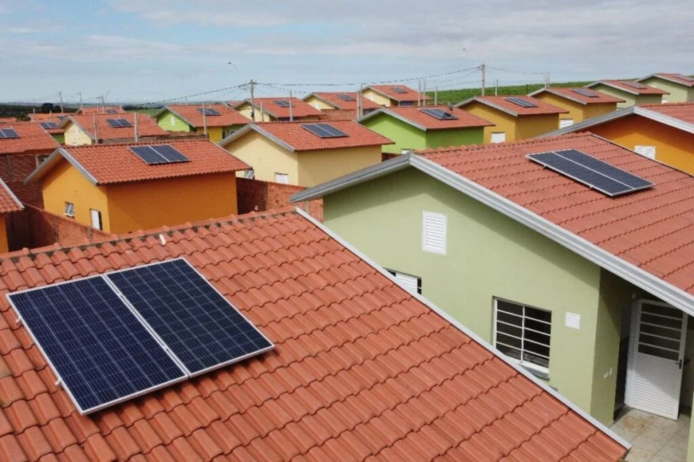

Residência Sustentável
Uma família no interior de São Paulo reduziu sua conta de luz em 90% após instalar painéis solares.

A energia solar é uma fonte renovável e sustentável. Conheça mais sobre esta tecnologia revolucionária.
Redução da Conta de Luz: Instalar um sistema de energia solar pode reduzir drasticamente os custos com eletricidade, chegando a até 95% de economia mensal.
Proteção Contra Aumentos de Tarifas: Garante mais previsibilidade financeira, independentemente do aumento das tarifas de energia elétrica.
Energia Limpa e Renovável: A energia solar é abundante e não gera emissões de gases poluentes, contribuindo para a preservação do meio ambiente.
Após o investimento inicial, a conta de energia elétrica pode ser reduzida drasticamente, com economias de até 95% em alguns casos.
O sistema se paga em poucos anos, dependendo do consumo e da região.
Protege contra aumentos constantes nas tarifas de energia elétrica.
A energia solar utiliza uma fonte inesgotável — o sol. Diferente de combustíveis fósseis, não causa emissões de gases de efeito estufa.
Ao gerar sua própria energia limpa, você contribui para a redução da poluição e combate às mudanças climáticas.
Imóveis com sistemas de energia solar são mais valorizados no mercado por sua eficiência energética e sustentabilidade.
Os sistemas solares têm poucas peças móveis, o que reduz a necessidade de reparos. Limpezas ocasionais e revisões técnicas simples garantem o bom funcionamento por décadas.
Fonte Renovável, a energia solar utiliza uma fonte inesgotável — o sol. Diferente de combustíveis fósseis, não causa emissões de gases de efeito estufa.
Redução da Pegada de Carbono, ao gerar sua própria energia limpa, você contribui para a redução da poluição e combate às mudanças climáticas.
A energia solar é captada por painéis fotovoltaicos que convertem a luz do sol em energia elétrica. Essa energia pode ser utilizada diretamente ou armazenada para uso posterior. Além disso, ela pode ser integrada à rede elétrica para compensação de energia.



Uma família no interior de São Paulo reduziu sua conta de luz em 90% após instalar painéis solares.
Uma rede de supermercados adotou energia solar e economizou milhares de reais anualmente.
O custo pode variar dependendo do tamanho do sistema, mas geralmente o investimento é recuperado em poucos anos com a economia gerada.
Sim, embora a produção seja reduzida, os painéis ainda captam luz difusa.
Sim, a limpeza periódica dos painéis é recomendada para manter a eficiência.